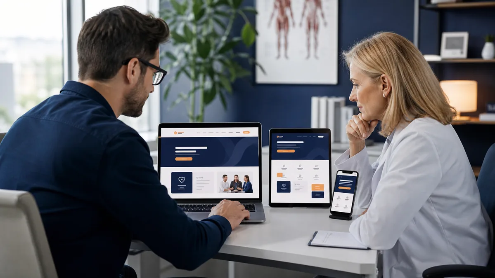

Web DevelopmentPublished July 20, 2026 · 10-minute read
Healthcare Website Design: HIPAA, Accessibility, and Local SEO
Plan patient journeys, privacy-aware data flows, WCAG accessibility, local search visibility, mobile speed, and accountable maintenance.
Learn More about healthcare website design